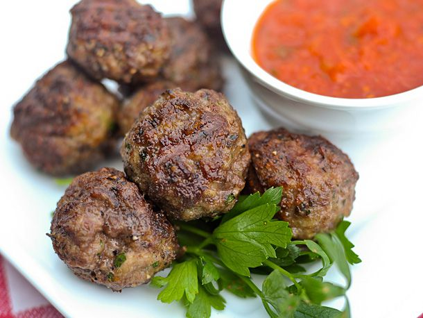

Italian Meatballs

Description
The best melt-in-your-mouth meatballs.
Ingredients :
- 1 pound ground beef
- 1/2 pound ground pork
- 1 large egg, slighly beaten
- 1/2 cup grated parmesan
- 1/3 cup dried bread crumbs
- 2 tsp fresh minced garlic
- 2 tsp salt
- 1 tsp fresh ground black pepper
- 1/2 cup milk
- 1/2 tsp dried oregano
- 1/4 cup chopped fresh parsley
Steps :
- Mix all ingredients together in a large bowl.
- Shape into small meatballs (at this point you can place on a jelly-roll/baking sheet and freeze to use later, or cover with plastic wrap refrigerate up to 24 hours before using).
- Drop the meatballs into simmering pasta sauce, do not stir for at least 20 minutes or you will risk breaking the meatballs.
- Continue cooking in the simmering sauce for another 20 minutes (depending on how fast your sauce is simmering 40 minutes total should fully cook the meatballs).
- After the 40 minutes cooking time continue cooking your sauce with the meatballs in for as long as desired.
**note** you may also bake the meatballs at 350 degrees F for 25 minutes or until cooked through.